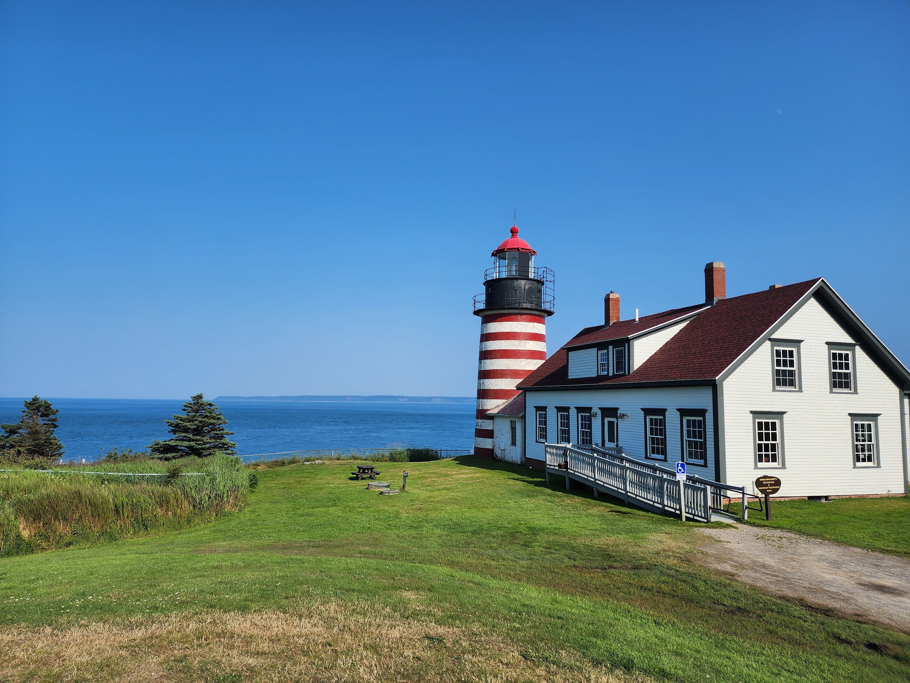

In the far northeast corner of the country, is the state of Maine. Located between Augusta and
Waterville, is the town of Vassalboro. Travel on route 32, either northbound from South China, or
southbound from Winslow, and you will find the town itself, sitting right off the western end of China
Lake.
My wife (originally from Waterville) brought me here from Kansas, after she graduated from college. We bought a house of the Cross Hill Road in early 2024, and have lived here ever since. The move was a bit of a culture shock for me at first. But, its forests, beaches, colorful seasons, clear lakes, and (believe it or not), winter weather have made me grown to love it here.
Here you will find photos I've taken of both Vassalboro, and the rest of Maine, along with historical photos that show Vassalboro's past.
Hover over or tap on each photo to get its description, location and date taken.
My wife (originally from Waterville) brought me here from Kansas, after she graduated from college. We bought a house of the Cross Hill Road in early 2024, and have lived here ever since. The move was a bit of a culture shock for me at first. But, its forests, beaches, colorful seasons, clear lakes, and (believe it or not), winter weather have made me grown to love it here.
Here you will find photos I've taken of both Vassalboro, and the rest of Maine, along with historical photos that show Vassalboro's past.
Hover over or tap on each photo to get its description, location and date taken.

Vassalboro Today
My pictures of Vassalboro

Vassalboro Yesterday
Historical photos of Vassalboro

All of Maine
My pictures of the rest of Maine